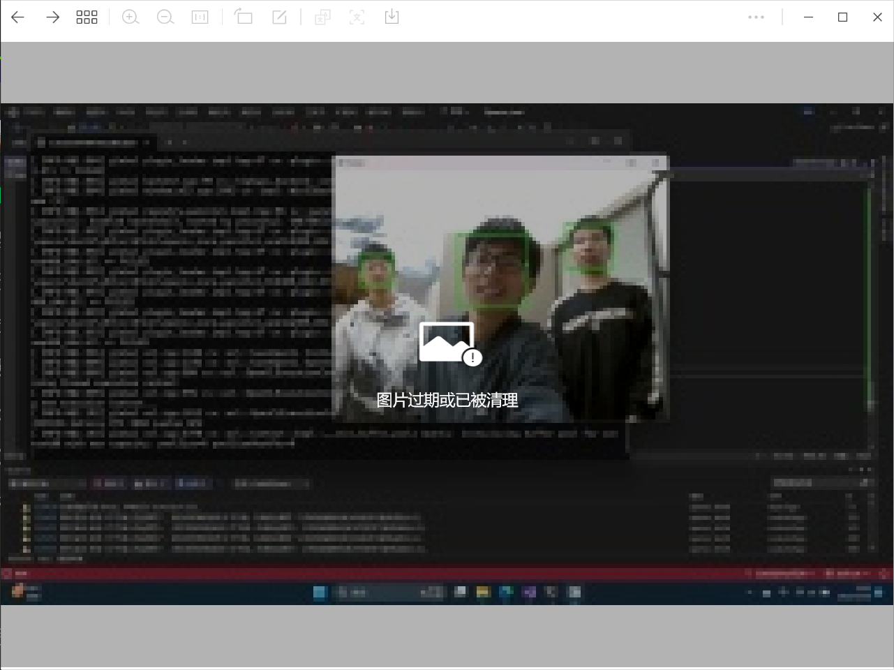
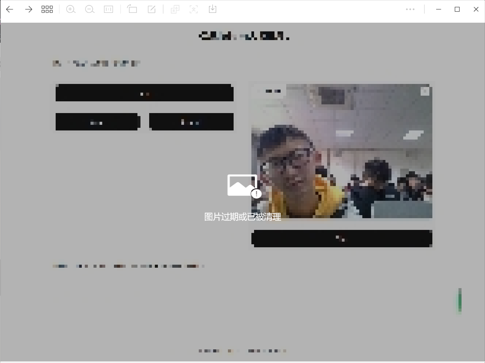
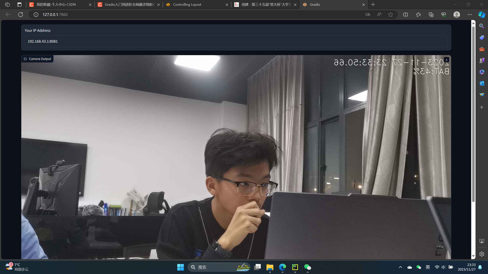
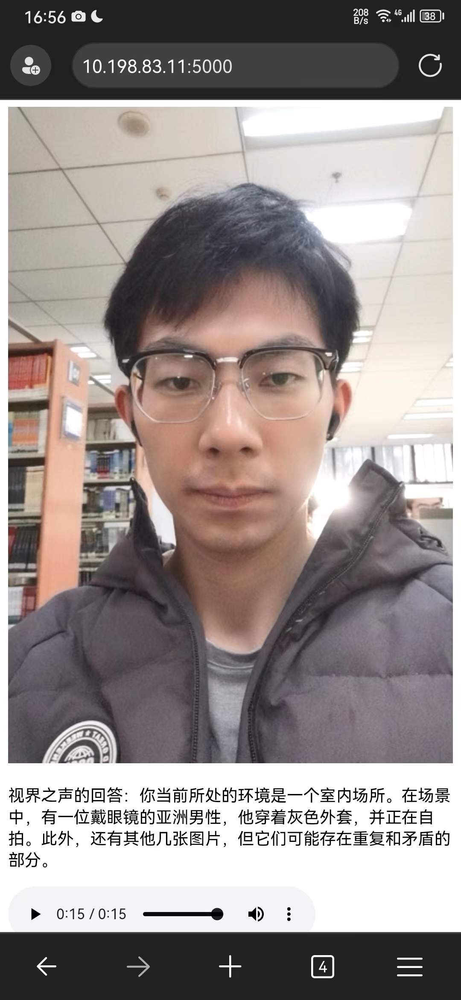
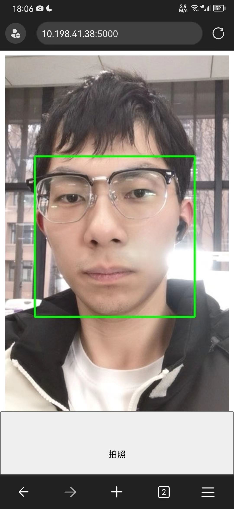
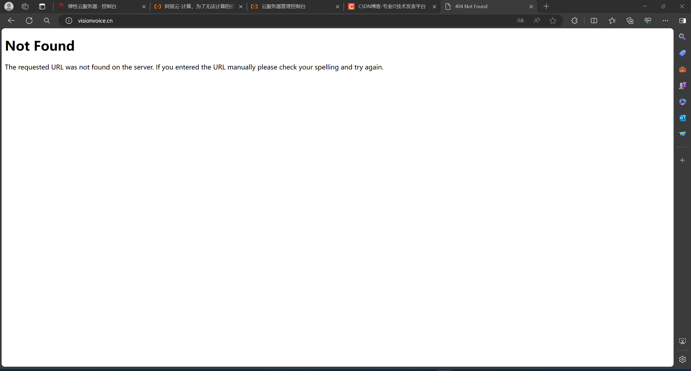

智慧盲人相机项目开始孵化
项目更名为“视界之声”
开始学习OpenCV以及前端技术
探索OpenCV霍夫变换、角点检测等技术，尝试实现人脸检测
学习pyaudio和sklearn
尝试用多层感知实现语音识别
代码链接 - train_and_test.py
探索C++调用Python接口
探索Python调用C++接口
了解了OpenCV级联分类器的用法，用级联分类器制作了简易的人脸检测照相机

所有代码用Python重写，确定Python为代码核心语言
将语音识别与人脸检测通过某种并行机制简单结合，实现声控拍照
开始探索大模型技术
尝试使用云端语音识别，但精度拉跨
通过多个大模型协同实现了简单的环境识别
视界之声1.0版本上线
完善统一了产品的各个基本功能
视界之声1.1更换了人脸检测的方法，提高了非正脸的识别精度
视界之声1.2添加了人脸检测与语音播报的并行机制，解决了卡顿问题
视界之声1.3修改了语音识别与主进程的并行机制，调用多核计算，加快识别速度
视界之声1gradio上线

通过调用手机IP摄像头实现视界之声1gradio与手机的交互

视界之声1.4更换了调用的大模型，提高了识别精度
视界之声2.0版本上线
添加了自训练的场景分类模型，使环境识别精度再上台阶
添加了多图片识别处理机制，实现365°环境识别
制作了更加精美的UI，用户可同时通过声音和按钮来开启服务，同时镜头图片嵌套在UI界面中
视界之声2.1添加了图片自动查重机制
视界之声英文名visionvoice正式启用
视界之声logo正式启用
视界之声网站挂牌上线
https://visionvoice.geek-tech.group/
视界之声2.2改变了环境识别中多图片的传递方式
视界之声2.3调整了语音识别的噪声适应机制以及麦克风监听机制
视界之声2setup程序上线
视界之声2.4加强了内存的动态释放，进一步提高程序运行速度
添加了UI界面图片的初始化机制
视界之声2.5在智慧拍照服务中加入了照片评价功能
视界之声3.0版本上线
添加程序加载时的动画
隐藏了控制台
添加了键盘监听，实现了一键退出、一键拍照、一键提前开始环境识别
精简了安装包
学习了flask后端框架，开始尝试产品向Web端的迁移
Web端逻辑框架完成，但存在两个问题：
在非本机IP中调用摄像头涉及到复杂的权限和防火墙规则
Web端视频帧实时传输对带宽压力过大
开始深入学习通信协议、JavaScript、Flask等知识
精简了视界之声的启动程序，优化cpp文件逻辑
通过虚化背景以及按钮变色的方式美化了UI
使用安全组及浏览器站点IP信任初步实现了产品的Android端使用
视界之声向Web端的迁移加速进行
 
优化了智慧拍照和环境识别的组件布局，提升用户体验
简单通过降低帧率，减少传输次数的方式提高了前后端互动的流畅度
租用服务器，并尝试使用https通信来获取调用用户摄像头的权限
华为云购买域名并进行DNS解析
失败，因为国内IP（除港澳台）的服务器需要复杂的域名备案流程
namesilo购买国外域名及并在华为云租用香港服务器
使用美国DNS服务商cloudflare提供的域名加密服务->SSL
成功获得SSL域名
将项目在Github上开源并在Github Pages栏挂载视界之声网页
在域名服务商处添加CNAME记录实现域名重定向
我们的官网再度上线
殚精竭虑，几近放弃，尝试使用Windows IIS服务器部署flask后端程序，失败，有两个方面：
服务器不存在音频设备及TTS引擎，无法使用pyttsx3的离线语音合成
Windows服务器部署flask后端报500错误
尝试了替代方案——内网穿透及自签名SSL证书，以下是一些探索，来自我撰写的Web技能点知识库：
Web技能点——关于视界之声https实现的探索
使用远程桌面音频设备及TTS引擎解决了服务器使用pyttsx3的问题，同时结束了使用Ubuntu部署的尝试（无远程桌面）
参考Medium和CSDN博客再度尝试IIS服务器部署，并添加Python系统变量及文件夹执行权限，失败，404错误

CSDN - Windows Server IIS服务器部署flask
Medium - Deploy a Python Flask Application in IIS Server and run on machine IP address
再度尝试IIS部署，放开安全组443 80 8080端口，失败，端口占用
转变思路，从原先的在服务器安装SSL证书转变为使用DNS服务商加密连接；
同时使用阿里签署的SSL证书代替原先的openssl自签名证书
用域名访问443端口，成功！
域名如下：
智慧拍照模式下将图片处理逻辑由后端转向前端，后端仅传输脸部坐标，前端绘制矩形
将前端的图片显示和传输用两个函数异步执行，使传输速率不影响画面流畅度
记录上一时刻人脸位置，允许图片传输频率降低 30倍
使用IP地址代替域名，跳过DNS域名解析，提高网页加载速率
制作了启动页面，美化了UI界面，视界之声Web App正式上线！
启动网址：https://pineapplesnowy.github.io/Android_start/
解决了一些网页上的问题并进行了一些优化：
解决嵌套网页摄像头调用问题
实现在前端部署markdown编辑器，美化文字布局
添加环境识别摄像头选择调用逻辑（前置/后置）
添加盲人友好型用户手册在在线朗读功能
将产品的gradio demo通过嵌入方式加进网页中
解决了服务器长期部署的不稳定性问题
成功制作了PWA应用，并给用户提供了下载方式，视界之声成功落地手机软件！
利用PWA应用特性实现了软件的跨平台性（IOS和Android）
使用飞书文档编写了详细的产品安装说明，视界之声面向全世界开放！ 安装说明